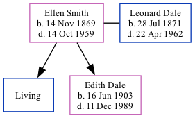

Ellen Elizabeth Dale (née Smith) 1869 - 1959
[ Home ] | [ Calendar ] | [ Surnames Index ] | [ Family History ]Ellen Smith, the wife of Leonard Dale (the great-great-uncle of Nigel Horne), was born in Swalecliffe, Kent, England on Nov 14, 18691 and married Leonard (a boiler attendant brickworks with whom she had 2 children: George and Edith Kate, along with 1 surviving child) at St Mary's Church, Chartham, Kent, England on Mar 14, 18964.
Throughout her life, Ellen lived in several places: in Ivychurch, Kent in 18815; at 88 Church Hill, Temple Ewell, Kent on Mar 31, 19016; on 12 Douglas Road, Dover, Kent on Apr 2, 19117; on Widred Road, Dover, Kent in 19211 and on Jun 19, 19211; and at Fern Cottage, Uckfield, Sussex, England on Sep 29, 19398.
She died on Oct 14, 1959 in Danehill, Sussex2,3.
Children
- Edith Kate was born on Jun 16, 1903
Citations
- 1921 Census Of England & Wales - Findmypast (was age 51 and the wife of the head of the household)
- England & Wales, Death Index: 1984-2005 Online publication - Provo, UT, USA: The Generations Network, Inc., 2007.Original data - General Register Office. England and Wales Civil Registration Indexes. London, England: General Register Office. © Crown copyright. Published by permission of the Cont
- England & Wales, National Probate Calendar (Index of Wills and Administrations),1861-1941 Online publication - Provo, UT, USA: Ancestry.com Operations Inc, 2010.Original data - Principal Probate Registry. Calendar of the Grants of Probate and Letters of Administration made in the Probate Registries of the High Court of Justice in England. Londo
- England & Wales, FreeBMD Marriage Index: 1837-1915 Online publication - Provo, UT, USA: The Generations Network, Inc., 2006.Original data - General Register Office. England and Wales Civil Registration Indexes. London, England: General Register Office. © Crown copyright. Published by permission of the Cont
- 1881 England Census Online publication - Provo, UT, USA: The Generations Network, Inc., 2004. 1881 British Isles Census Index provided by The Church of Jesus Christ of Latter-day Saints © Copyright 1999 Intellectual Reserve, Inc. All rights reserved. All use is subject to the (Relation to Head of House: Daughter)
- 1901 England, Wales & Scotland Census - Findmypast (was age 31 and the wife of the head of the household)
- 1911 Census for England & Wales - Findmypast (was age 41 and the wife of the head of the household)
- 1939 Register - Findmypast (was the wife of the head of the household)
Media
1939 Register Transcription - TNA-R39-2563-2563G-014-17
1901 England, Wales & Scotland Census - GBC/1901/0005545708
Family Tree
Generated by Ged2Site. Last updated on Jul 20, 2025